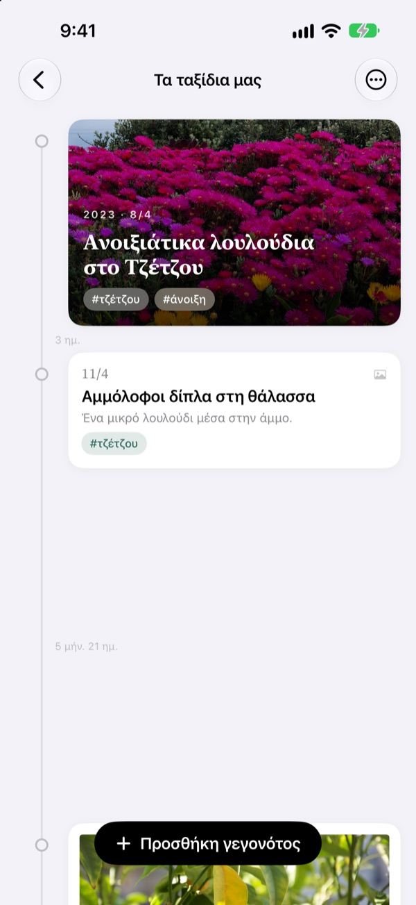
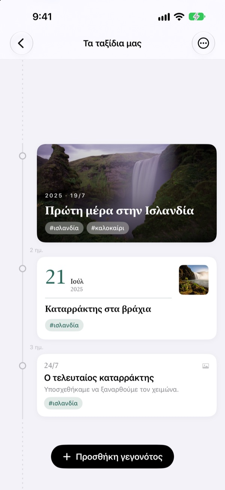
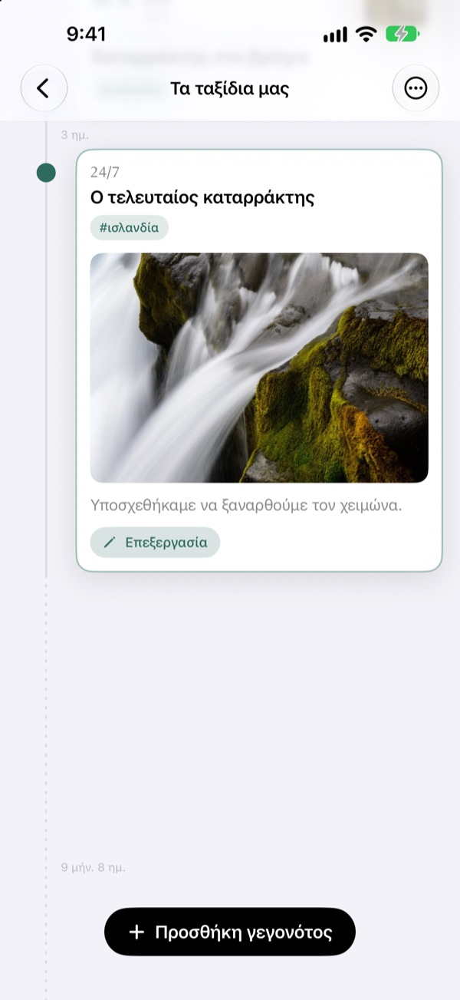
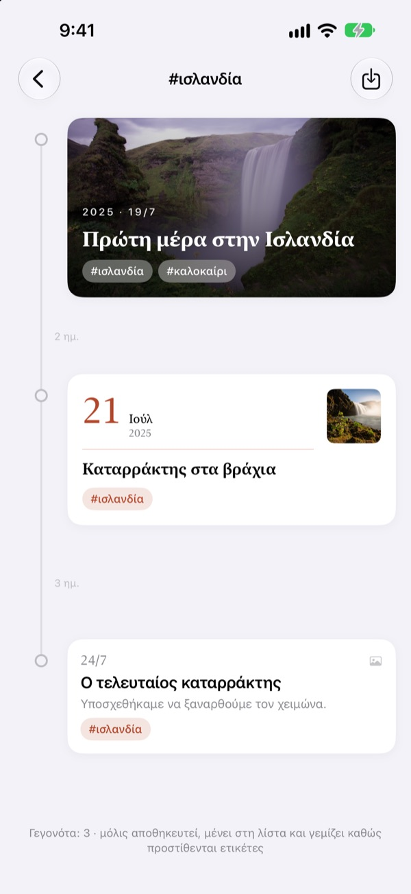
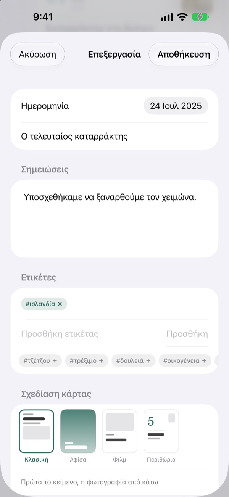

Ένα χρονολόγιο
που απλώνεται με τον χρόνο
Τρεις μέρες και πέντε μέρες απέχουν 3 προς 5. Ένα μεγάλο κενό, όπως δύο χρόνια και τέσσερις μήνες, διπλώνει σε διακεκομμένη γραμμή. Μόνο από τις αποστάσεις καταλαβαίνεις πώς κύλησε ο χρόνος.
Όλες οι λειτουργίες είναι δωρεάν. Για iPhone και iPad.

Άπλωσε τις αποστάσεις μόνος σου
Κάθε κουμπί προσθέτει ένα νέο γεγονός μετά το τελευταίο. Οι αποστάσεις ακολουθούν τον ίδιο κανόνα με την εφαρμογή.
Στη βιβλιοθήκη φωτογραφιών ο χρόνος δεν φαίνεται
Η βιβλιοθήκη βάζει τα πάντα στη σειρά κατά ημερομηνία, όμως τρεις μέρες και δύο χρόνια πιάνουν το ίδιο ένα βήμα. Το Yeoul αφήνει ανάμεσα στα γεγονότα τόση απόσταση όσος χρόνος πέρασε, κι έτσι βλέπεις αμέσως ποιες περίοδοι ήταν γεμάτες και ποιες ήσυχες.
Η απόσταση είναι ο χρόνος
Όλο το χρονολόγιο έχει μία κλίμακα: το ίδιο διάστημα έχει το ίδιο μήκος σε κάθε σημείο της οθόνης. Σε κάθε απόσταση γράφεται η πραγματική διάρκεια, όπως 3 ημ. ή 5 μήν. 21 ημ.
Τα πολύ κοντινά γεγονότα παίρνουν λίγο χώρο, και τα πολύ μεγάλα κενά διπλώνουν σε διακεκομμένη γραμμή.

Βρίσκει τις φωτογραφίες εκείνης της μέρας
Όρισε την ημερομηνία και πάτησε Εύρεση σχετικών φωτογραφιών για να δεις όσες τράβηξες εκείνη τη μέρα. Δεν σου κάνει καμία; Με Αναζήτηση μόνος μου διαλέγεις εσύ.
Πάτησε ένα γεγονός στο χρονολόγιο και η φωτογραφία με το κείμενο ανοίγουν επί τόπου.

Μία ετικέτα μαζεύει σκόρπιες στιγμές
Βάλε σε γεγονότα μια ετικέτα όπως #Ισλανδία, πάτησέ την, και όλα τα γεγονότα με αυτήν, από όλα τα χρονολόγια, μαζεύονται σε ένα νέο.
Αποθήκευσέ το και μένει στη λίστα σου, προσθέτοντας μόνο του όσα γεγονότα πάρουν την ίδια ετικέτα.

Η κατάλληλη κάρτα για κάθε στιγμή
Η Κλασική βάζει πρώτα το κείμενο, η Αφίσα γεμίζει την κάρτα με τη φωτογραφία, το Φιλμ την πλαισιώνει σαν τυπωμένη και το Περιθώριο δίνει τη σκηνή σε μια μεγάλη ημερομηνία. Η προεπισκόπηση αλλάζει αμέσως.

Ξεκινάς σε τρία βήματα
- 1
Φτιάξε ένα χρονολόγιο
Ο πρώτος χρόνος του παιδιού, μια σχέση, ένα ταξίδι: το καθένα με όνομα και χρώμα.
- 2
Πρόσθεσε γεγονότα
Γράψε ημερομηνία και τίτλο και βάλε μια φωτογραφία εκείνης της μέρας.
- 3
Βάλε ετικέτες
Τα γεγονότα με την ίδια ετικέτα βρίσκονται μαζί, ακόμη κι από διαφορετικά χρονολόγια.
Τέσσερα σχέδια κάρτας
- Κλασική
- Πρώτα το κείμενο, η φωτογραφία από κάτω.
- Αφίσα
- Η φωτογραφία γεμίζει την κάρτα με μεγάλο τίτλο από πάνω. Χωρίς φωτογραφία, μπαίνει το χρώμα του χρονολογίου.
- Φιλμ
- Φωτογραφία με περιθώριο σαν τυπωμένη, γραμματοσειρά γραφομηχανής και σφραγίδα ημερομηνίας.
- Περιθώριο
- Μεγάλος αριθμός ημερομηνίας και μικρή φωτογραφία. Εδώ πρωταγωνιστούν οι λέξεις.
Ένα νέο γεγονός ξεκινά με το σχέδιο της πιο πρόσφατης κάρτας του χρονολογίου του.
Όλες οι λειτουργίες είναι δωρεάν
Δωρεάν
- Όσα χρονολόγια θέλεις, με όνομα και χρώμα
- Φωτογραφίες, ιστορίες και ετικέτες σε κάθε γεγονός
- Εύρεση φωτογραφιών από τη μέρα του γεγονότος
- Αποθηκευμένα χρονολόγια ετικετών
- Τέσσερα σχέδια κάρτας
- Συγχρονισμός iPhone και iPad μέσω iCloud
- Καταγραφή με Συντομεύσεις και Siri
Στήριξε τον δημιουργό
- Διάλεξε μικρό, μεσαίο ή μεγάλο φιλοδώρημα
- Δεν ξεκλειδώνει τίποτα. Είναι απλώς ένα ευχαριστώ
Θα το βρεις στις ρυθμίσεις της εφαρμογής, όποτε θέλεις.
Χωρίς διαφημίσεις, χωρίς συνδρομή.
Συχνές ερωτήσεις
Γιατί οι αποστάσεις ανάμεσα στα γεγονότα διαφέρουν τόσο;
Το Yeoul αφήνει απόσταση όσο ο χρόνος που πέρασε πραγματικά. Όλες οι αποστάσεις έχουν την ίδια κλίμακα, άρα τρεις και πέντε μέρες απέχουν 3 προς 5. Τα πολύ κοντινά γεγονότα κρατούν μια ελάχιστη απόσταση για να μην επικαλύπτονται, και τα πολύ μεγάλα κενά διπλώνουν σε διακεκομμένη γραμμή με την πραγματική διάρκεια, όπως 2 έτ. 4 μήν.
Δεν βλέπω τις φωτογραφίες εκείνης της μέρας.
Η αναζήτηση κατά ημερομηνία χρειάζεται πρόσβαση στις φωτογραφίες. Επίτρεψέ την στις Ρυθμίσεις > Yeoul > Φωτογραφίες. Το Yeoul ψάχνει όσες τραβήχτηκαν από μεσάνυχτα σε μεσάνυχτα εκείνης της μέρας, στη ζώνη ώρας της συσκευής. Αν δεν θέλεις να δώσεις πρόσβαση, πάτησε Αναζήτηση μόνος μου ακριβώς από κάτω.
Τι είναι το χρονολόγιο ετικέτας;
Πάτησε την ετικέτα ενός γεγονότος και το Yeoul μαζεύει σε ένα χρονολόγιο όλα τα γεγονότα με αυτήν, από όλα σου τα χρονολόγια. Όσα βλέπεις συχνά τα κρατάς στη λίστα. Τίποτα δεν αντιγράφεται: αλλάζεις το αρχικό γεγονός και η αλλαγή φαίνεται κι εδώ, ενώ αν διαγράψεις το χρονολόγιο ετικέτας τα γεγονότα μένουν.
Γιατί δεν μπορώ να προσθέσω γεγονός σε χρονολόγιο ετικέτας;
Το χρονολόγιο ετικέτας είναι προβολή που συγκεντρώνεται ανά ετικέτα, όχι χώρος αποθήκευσης, οπότε δεν γίνεται να ξέρει σε ποιο χρονολόγιο ανήκει ένα νέο γεγονός. Πρόσθεσέ το στο δικό του χρονολόγιο με την ετικέτα και θα εμφανιστεί εδώ μόνο του.
Μπορώ να καταγράψω κάτι χωρίς να ανοίξω την εφαρμογή;
Ναι. Χρησιμοποίησε την Καταγραφή γεγονότος στην εφαρμογή Συντομεύσεις ή με τη Siri και διάλεξε μόνο χρονολόγιο και τίτλο. Χωρίς ημερομηνία, κρατιέται η τρέχουσα ώρα.
Βλέπω τα χρονολόγιά μου και σε άλλες συσκευές;
Ναι, σε κάθε iPhone και iPad συνδεδεμένο στο iCloud με τον ίδιο λογαριασμό Apple. Έλεγξε στις Ρυθμίσεις > το όνομά σου > iCloud ότι το iCloud είναι ενεργό. Ανάλογα με τη σύνδεση, οι αλλαγές μπορεί να αργήσουν λίγο.
Πώς διαγράφω τις καταγραφές μου;
Σύρε ένα χρονολόγιο προς τα αριστερά στη λίστα ή πάτησε Επεξεργασία. Μαζί με το χρονολόγιο διαγράφονται και τα γεγονότα του. Ό,τι έμεινε στο iCloud το σβήνεις από τη διαχείριση αποθηκευτικού χώρου στις ρυθμίσεις iCloud.
Βλέπει ο δημιουργός τις καταγραφές μου;
Όχι. Οι καταγραφές και οι φωτογραφίες μένουν μόνο στις συσκευές σου και στο δικό σου iCloud, και ο δημιουργός δεν τις βλέπει. Λεπτομέρειες θα βρεις στην πολιτική απορρήτου παρακάτω.
Πώς αναφέρω ένα σφάλμα ή προτείνω κάτι;
Κατευθείαν από τις ρυθμίσεις της εφαρμογής, με email ή στο Instagram @lee25_ios. Το μοντέλο της συσκευής, η έκδοση iOS και τι συνέβη μάς βοηθούν να απαντήσουμε πιο γρήγορα.
Ερωτήσεις ή ιδέες; Γράψε στο leeo@kakao.com.